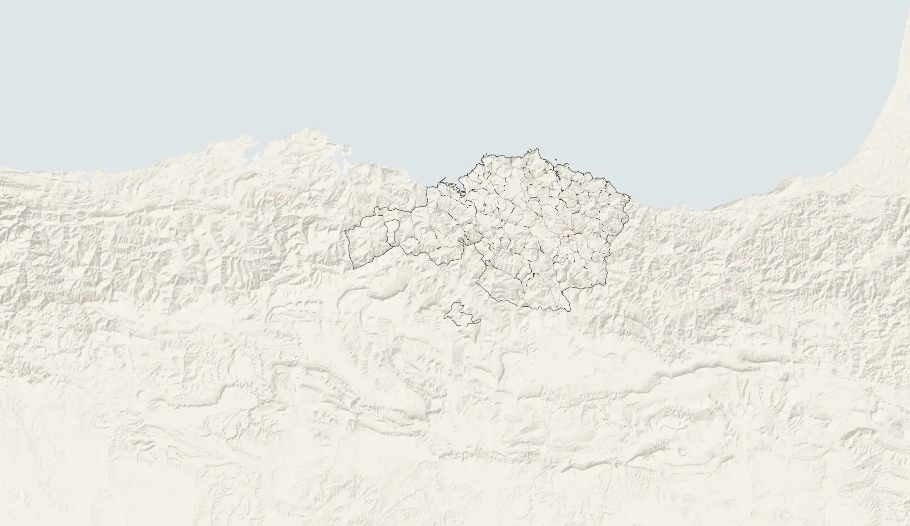

Qué consigue Bizkaia retirando nidos de avispa asiática, y qué no
Roberto Burgos · Noviembre de 2026
↓
Esta página necesita JavaScript para mostrar los gráficos. La metodología está en metodologia.html.